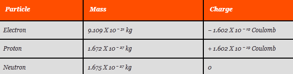

Modern Atomic Theory
As per modern atomic structure, the mass of an atom and its positive charge are concentrated in a tiny nucleus, while negatively charged electrons revolve around the nucleus in elliptical orbits. The central nucleus contains positively charged protons and neutral neutrons.
Molecule is the smallest particle of a matter. A molecule consists of two or more same or different atoms. Atom is not the smallest physical particle in a matter. The smallest particle of an element does not remain in atomic form, it remains in molecular form.
All kind of physical, chemical and electrical properties of molecule depend upon its atomic structure. Before, going to the actual matter, let's have a look at Dalton's Atomic Theory and then we will look into very basic concept of Modern Atomic Theory for understanding atomic structure more clearly.
In the year 1808, a chemistry teacher John Dalton published his theory about atoms. At that time many unexplained chemical phenomenon got quickly unlocked by Dalton’s theory. Hence, the theory became a theoretical foundation in chemistry. The postulates of Dalton’s atomic theory were as follows.
- All matter is made up of small indivisible and indestructible particles called atoms.
- All atoms of the same element have identical properties, but differ from atoms of other elements.
- Atoms of different elements combine together to form a compound.
- A chemical reaction is nothing but rearrangement of these atoms.
- Atoms cannot be created or destroyed by any means.
Dalton’s theory had certain drawbacks like; today we know that atoms can be destroyed. Also some atoms of the same elements vary in their mass(isotopes). The theory also fails to explain the existence of allotropes.
Atomic Model
As per modern concept, atom mainly consists of electrons, protons and neutrons.
The table below shows the mass and electric charge of electrons, protons and neutrons.

From above table it is found that a proton is 1840 times heavier than an electron. The absolute value of electric charge of a proton and of an electron are same. So there must be same number of protons and electrons in an electrically neutral atom. The orbits along which the electrons revolve are also known as shells or energy levels. In atomic structure the successive shells are named as K, L, M, N, O, P, and Q as per increasing distance outwards from the nucleus. Each shell or energy level has maximum number of electrons for stability. This maximum number of electron in a shell can be given by the formula 2n2 where n is the shell number in sequential order outward from the nucleus.
As per this formula,
The maximum number of electron in first inner shell from nucleus is 2X12 = 2,
The maximum number of electron in second inner shell from nucleus is 2X22 = 8,
The maximum number of electron in third inner shell from nucleus is 2X32 = 18,
and so on.
These values are only applicable for inner shell or energy level of an atomic structure. For outer most shell of an atom the above rule is not applicable. After fulfilling the maximum numbers of electrons in different inner shells, the rest electrons would be in outer most shell of atom.
Atomic Structure
Let’s consider one copper atom, where number of electrons is 29. As per this rule the number of electrons in the first, second, third shells that is in K, L and M shell is 2, 8, and 18. The remaining 1 [29 − (2 + 8 + 18) = 1] electron will be in outer most shell i.e. fourth of N shell of the atom.
Every energy level or shell in atomic structure can further be sub-divided into different sub-shells or orbital. The number of sub shells or orbital in an energy level is equal to its denoting number.
That means the energy level nearest to the nucleus will have one orbital or sub shell as that main shell is denoted as 1 (n = 1).
The next nearer shell from nucleus will have two sub shells or orbitals as this is denoted as 2 (n = 2) .
Similarly third (n = 3) nearer shell from nucleus will have three orbital and so on.
The orbital are denoted with s, p, d, f,.............. Among the orbital of one single shell the first orbital is denoted as s, second orbital is denoted as p, the third one is denoted as d and so on.
So first shell will have one s orbital and is denoted as 1s.
The second shell will have one s and one p orbital and they are denoted as 2s & 2p respectively
The third shell will have one s, one p and one d orbital and they are denoted as 3s, 3p & 3d respectively and so on.
Here we have another thing to remember that s orbital has one sub orbital and every sub orbital can contains maximum two electrons. The p orbital has 3 sub orbital and d orbital has 5 sub orbital. That means p orbital can contain maximum 6(3X2) electrons and d orbital can contain total 10 (5X2) electrons.
The lower energy sub orbital are first filled up then next higher orbital is filled. There would not be any chance of filling up any higher orbital or sub orbital, before filling is completed in its lower orbital.
If we go through the examples below it will be clear to us.
Atomic structure of aluminium having 13 electrons
Atomic Structure of Copper having 29 Electrons
Atomic structure of copper having 29 electrons
Here it can be noticed that 3d orbital is in higher energy level than 4s
Atomic Structure of Silver having 47 Electrons
Atomic structure of silver having 47 electrons
Here it can be noticed that 3d orbital is in higher energy level than 4s similarly 4d orbital is in higher energy level than 5s similarly.
Modern Atomic Theory
The modern atomic theory is just little more evolved than the Dalton’s Theory. Modern atomic theory is also called as quantum theory. The concept of wave particle duality comes into picture here. It says that the electrons which are considered to be particles can sometimes behave like waves. So an atom has a nucleus which is surrounded by probability clouds. These clouds are the most probably locations of electrons. The size and shape of these clouds can be calculated by using the equations of the waves.
 by
by {kind=link}
{kind=link}
{kind=link}
{kind=link}